Given the current state of a deformable object and a goal force, we learn the
gripper motion that produces it, across deformable materials.
We present two methods: an open-loop policy that acts from state and goal
alone, and a closed-loop policy that additionally senses the force it is
currently applying.
University of California, Irvine · CS 295 · Deep Learning for Robotics
Our best force-tracking rollout (cloth lift). Particles show the
simulated object; the solid arrow is the force the gripper produces and the dashed arrow is
the commanded target.
Overview
Our goal is contact-force control on deformable objects: moving a gripper so the
force on the object follows a target trajectory F*(t), even when object stiffness varies widely.
We study this with both open-loop and closed-loop control.
All experiments run in PhysTwin,
which reconstructs each object from RGB-D video as a calibrated spring-mass digital twin.
The twin provides dense force labels at every frame without requiring a physical force sensor.
What is new
Prior PhysTwin work reconstructs and replays deformable objects; no controller exists.
We built the following on top of the PhysTwin simulator:
Force-tracking pipeline. Data collection from the GPU simulator, behavior cloning, PPO fine-tuning, and live rollout evaluation measuring contact-force error.
Release problem diagnosis. BC never retracts because demonstrations only apply increasing force. PPO fixes this, raising the release fraction from 0.04 to 0.87.
Feedback ablation. A controlled open vs. closed loop comparison shows force feedback only helps outside the training distribution (novel ramp goals).
Physics conditioning. A 2D material descriptor and FiLM layer let one policy handle rope, cloth, and a plush toy, with partial held-out material transfer.
Goal-aware ensemble. Routing each rollout to the best specialist lowers mean err_ratio from 0.71 to 0.66, within 0.03 of the hindsight oracle.
Approach
Input
Output
Supervision
Limitation
PhysTwin (Jiang et al., 2025)
RGB-D video
calibrated spring-mass twin and recovered forces
per-case physics optimization
reconstruction and replay only; no control
VLA policies (RT-2, OpenVLA, π0)
images and language
action chunks
large-scale demonstrations
force is not the task specification
Learned deformable dynamics (RoboCraft, RoboCook)
point clouds
predicted particle motion for planning
sim/real state transitions
plans shape change, not force tracking
Classical force control (impedance / admittance)
force-torque sensor reading
joint torques
hand-designed control law
requires physical sensing and rigid-body assumptions
Ours
state and force goal
gripper displacements
target force trajectory through BC and RL
simulation only at present
We connect a controller directly to PhysTwin's Warp GPU simulator, generate policy data from
real and synthetic rollouts, and train policies that regulate contact force rather than simply
replaying or predicting it.
Force-tracking rollout on rope (low stiffness).
Force-tracking rollout on cloth (medium stiffness).
Force-tracking rollout on a plush toy (high stiffness).
Problem Setup
At each frame, the policy observes the object state and a goal force, then outputs a
6D gripper displacement to make the contact force match the goal. We test this
with both open-loop and closed-loop control.
GoalTrack a target force trajectory F*(t) during rolloutOutput6D gripper displacement per hand, per frameForce labelsSpring forces from PhysTwin; no physical force sensorsMetricerr_ratio: tracking error divided by goal magnitude. 0 is perfect; 1 means the error equals the goal.
Two methods, one input difference
Open-loop no feedback
Object particle statistics
Goal force per gripper
Material descriptor
Acts from state and goal alone; it never sees the force it actually produces.
Closed-loop force feedback
Everything in open-loop, plus:
＋ Current achieved force per gripper
Uses feedback to correct tracking error frame by frame.
Particle statistics compress hundreds of particle positions into a fixed-size vector describing
shape, motion, and gripper contact.
Evaluation: replay and ramp
We evaluate both methods in live rollouts with two goal types:
Replay in-distribution
F*(t) is a recorded force trajectory from the dataset.
Tests whether the policy can reproduce familiar force patterns.
Ramp out-of-distribution
F*(t) is a synthetic rise-and-fall force trajectory never seen in training.
Tests whether the policy can track a novel goal.
The ramp is especially difficult because its descending half requires the gripper to
retract, which does not appear deliberately in the demonstrations.
Three levels of generalization
Frame-level. Hold out one contiguous time window per case, avoiding contamination from neighboring velocity features.
Trajectory-level. Test on a new goal trajectory, the ramp.
Material-level. Hold out an entire material and test transfer using the
material descriptor.
The three nested generalization splits, from weakest to strongest.
The data
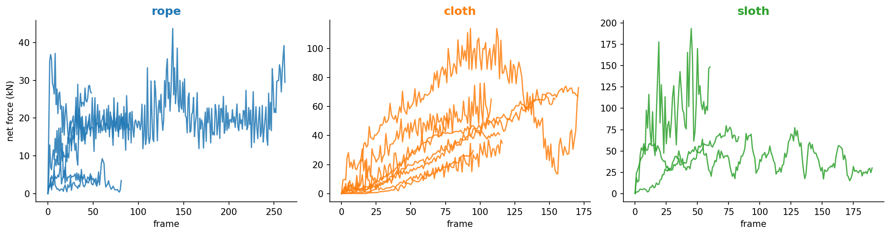
Recorded force traces by material. Every training label lies on one of these curves.
Force scales span roughly 40×, so one network must handle very different
force ranges.
Stiffness alone does not separate the materials. Rope, cloth, and plush
overlap in stiffness but differ in force scale.
The material descriptor
One policy handles all materials, so we give it a two-number fingerprint:
object stiffness and episode force scale. This tells the policy
how much motion is needed for a desired force change. The plot below shows that materials can
overlap in stiffness while separating by force scale.
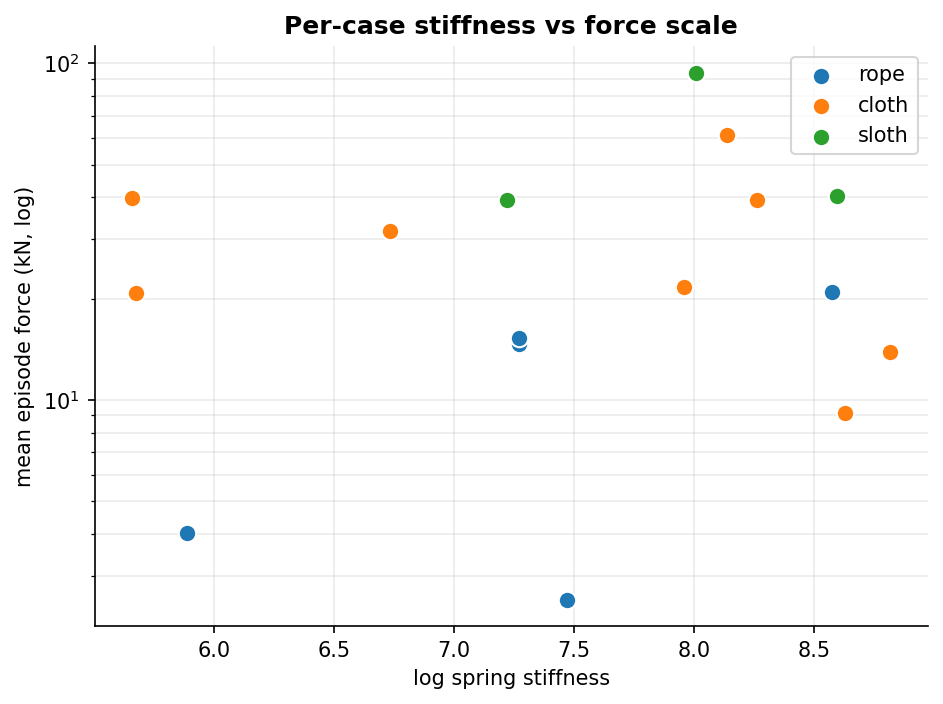
Descriptor space: each case is placed by stiffness and mean episode force.
Open Loop: Physics Sweeps & Forward Force Model
Our open-loop work characterizes the simulator before training inverse controllers.
Gripper motion is taken from recorded demonstrations and replayed at each frame with no policy
and no force feedback. We either sweep physics knobs with that fixed motion or train
a forward MLP: deformation statistics in, sim contact wrench out.
This is separate from the open-loop policy in §Open vs Closed,
which is a learned controller that maps state + goal → motion without reading achieved force.
Here we quantify physics sensitivity and verify that sim spring forces are learnable labels.
Recorded-motion replay: fixed script, no feedback
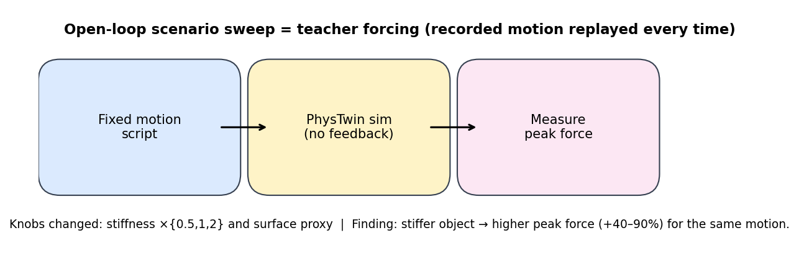
Recorded gripper script → PhysTwin sim → measure force. Only stiffness and surface proxy change
between runs; motion never adapts to what the object is doing.
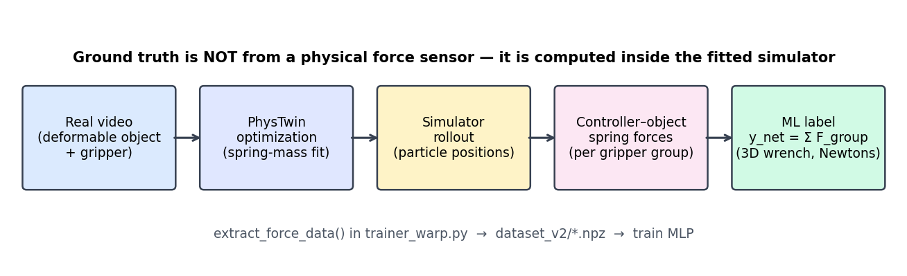
Force labels are spring forces inside the calibrated twin: dense at every frame, no physical sensor required.
Counterfactual physics sweeps
Same script, same object: we scale spring stiffness k ∈ {0.5, 1, 2} and swap surface presets
(concrete, grass, rubber). Question: how much does peak contact force move when physics changes
but motion does not?
Cloth, identical script: stiffness ×0.5 (left) vs ×2.0 (right). Stiffer means less deformation and higher peak force.
Rope: identical script, stiffness ×0.5 (left) vs ×2.0 (right).
Plush toy: same stiffness sweep.
What worked
+40–90% peak |F|
Doubling stiffness monotonically raises peak force on all three materials (concrete surface). Surface proxy shifts peak force less than stiffness on these motions.
27 counterfactual runs: fixed motion, swept k and three surface presets.
Surface effect (averaged). Secondary to stiffness here.
|F|(t) at k=1: full trajectory, not just the peak.
Forward model: deformation → force
Can a small MLP recover the sim wrench from the same 35-d particle summary used later by the
control policies? We evaluate on real PhysTwin cases with two splits:
random_block: one contiguous ~20% window per trajectory held out; train on
the rest. Tests interpolation within a seen manipulation.
cross_case: entire trajectories held out (e.g. rope: train on
single_push_rope_*, test on rope_double_hand). Tests new manipulation types.
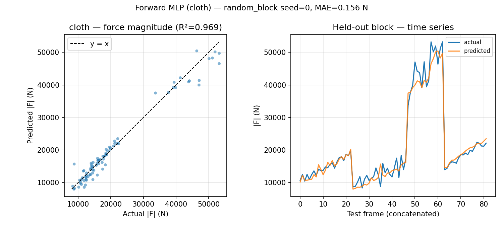
Worked (random_block): cloth R² ≈ 0.90 within trajectories.
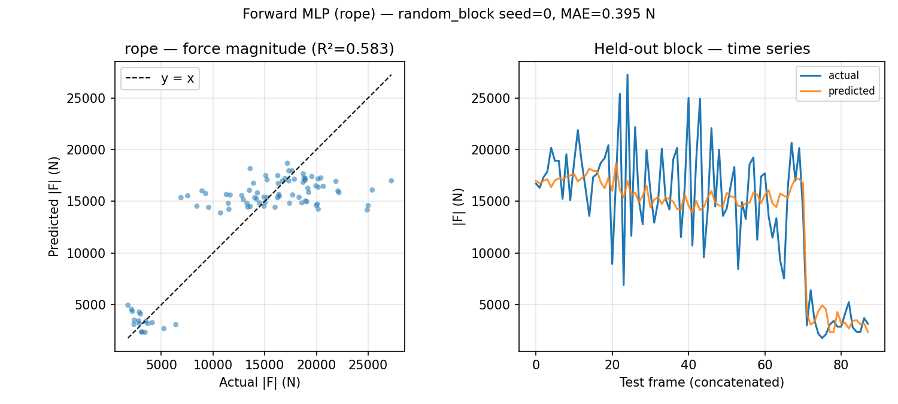
Failed (cross_case): training on single-hand push and testing on two-hand gives negative R² with only two train cases.
Takeaway
Stiffness sweeps map how force scales with physics under fixed motion. The forward MLP confirms sim labels are learnable on cloth within a trajectory; cross-manipulation generalization needs more rope/sloth cases. Closed-loop force control (below) builds on this same simulator and feature set.
Closed-Loop Force Control
The closed-loop policy observes the force it is currently producing. At each frame, it reads
the object state, achieved force, and goal force, then outputs a gripper displacement. The
simulator advances, and the new force becomes feedback for the next decision.
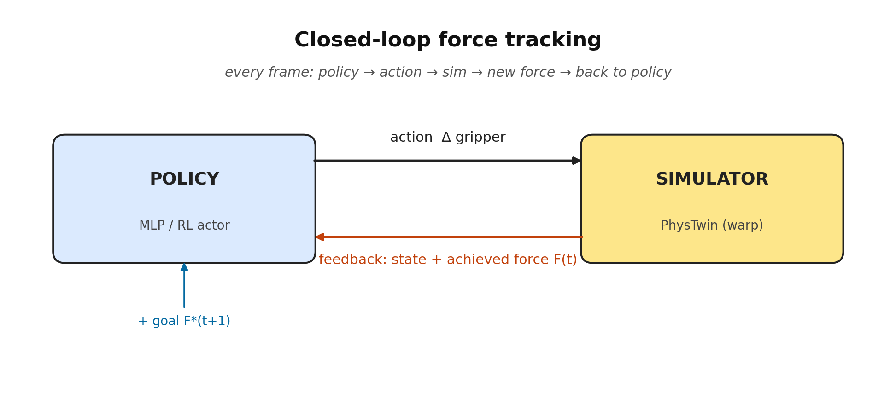
Closed-loop force tracking. Removing the red feedback arrow gives the open-loop policy.
Why feedback matters
During training, the policy sees only correct demonstration states. During rollout, it drives
the simulator itself, so one imperfect action can move it into an unfamiliar state and cause
errors to compound. Force feedback is the only signal that lets the policy detect and correct
this drift.
Running example: double_lift_cloth_1
t = 0
The cloth starts at rest with near-zero contact force. The policy reads the particle
statistics, achieved force, goal force, and material descriptor.
t = 1…T
The policy outputs 6D displacements, the simulator updates the cloth and spring forces, and
the new force feeds back into the next step.
eval
The best BC rollout reaches err_ratio 0.22, meaning the average tracking
error is 22% of the goal magnitude.
BC, best case: double_lift_cloth_1, err_ratio 0.22. The colored arrow is
the achieved force; the dashed arrow is the goal.
BC, ramp failure: on a synthetic ramp goal, BC fails to retract as the
target force drops; err_ratio 6.55.
The release problem
The ramp failure is systematic. Human demonstrations teach the policy how to increase force,
but not how to deliberately release it. When the goal returns to zero, BC enters an unseen
state and keeps pulling instead of retracting. Its release fraction is only
0.04, meaning it almost never decreases force when the goal decreases.
On double_lift_cloth_3, BC keeps adding force after the ramp peak, reaching 27.8 kN against a
5.5 kN goal peak. RL retracts and stays near the target.
RL retracting in a live rollout: on a rope ramp, RL reverses the gripper
as the goal drops, where BC keeps pulling.
Ramp goal, phase by phase
The falling edge is the hard part: the policy must recognize that the current force is high
while the next goal is lower, then reverse the gripper motion.
Grasp
frames 0–5
Reads: F ≈ 0, small goal
Must do: tighten grip
Rising edge
frames 5–45
Reads: achieved below goal
Must do: pull harder
Peak
frame ~46
Reads: achieved ≈ goal
Must do: hold
Falling edge
frames 46–92
Reads: force high, goal dropping
Must do: retract
BC stalls here; RL reverses the gripper.
Open Loop vs Closed Loop: When Does Feedback Matter?
The two policies differ by one input: achieved force. Both use the same data,
split, architecture, and training budget; only force feedback changes.
Replay: feedback barely matters. When the goal resembles training data, the
goal itself mostly determines the correct action.
Ramp: feedback matters. Removing it increases err_ratio by +1.48 on cloth
and +0.65 on sloth. Under a novel goal, the state drifts away from training data, and only
the closed-loop policy can sense and correct that drift.
Feedback helps most at the edge of the training distribution, where the policy must recover
from its own mistakes rather than replay familiar behavior.
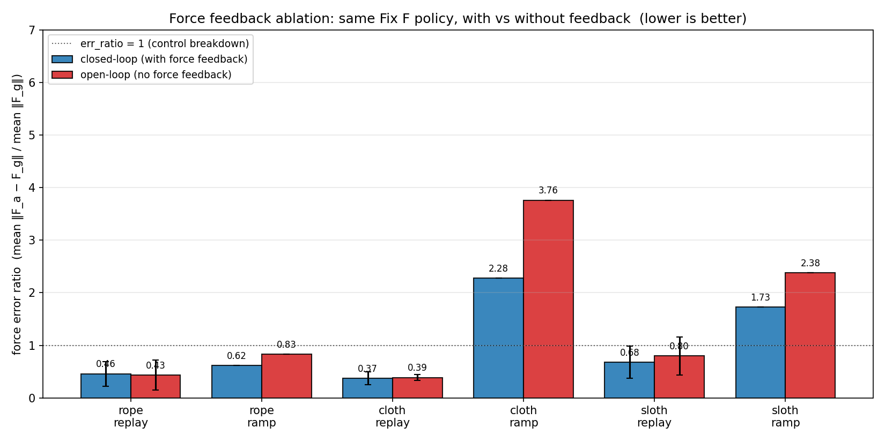
Open-loop and closed-loop err_ratio. The gap is small on replay and larger on ramps.
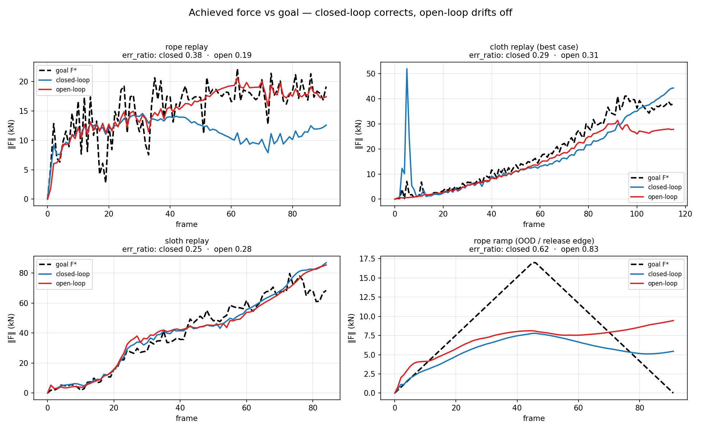
Achieved vs target force. Open-loop diverges on the ramp, while closed-loop partially
corrects.
Rollout comparison: open vs closed loop
The gap is clearest on ramp goals, where the state drifts away from training data.
Rope replay: closed-loop policy.
Rope replay: open-loop policy. Performance is similar on familiar goals.
Rope ramp: closed-loop policy partially tracks the new goal.
Rope ramp: open-loop policy cannot adapt without feedback.
Cloth ramp: closed-loop policy.
Cloth ramp: open-loop policy overshoots and remains high.
Experiments & Improvements
We improved the policy in stages. Each experiment targets a failure found in the previous one:
poor release behavior, weak material transfer, compounding rollout errors, or misleading
conditioning inputs.
Shared pipeline: PhysTwin rollouts provide training data, policies are trained by BC or RL,
and all results are measured in live rollout.
A key lesson is that validation loss does not reliably predict rollout performance.
Several models looked better offline but failed in control, so all claims below use live
rollout metrics.
BC imitates recorded gripper motions. It tracks familiar replay goals reasonably well but
fails on ramps because demonstrations rarely contain deliberate retraction.
BC on rope replay: reasonable tracking.
BC on rope ramp: the policy stalls and never retracts.
PPO starts from the BC policy but trains on its own rollouts, rewarding force-tracking
directly. This fixes the release problem: release fraction rises from 0.04 to
0.87, and the gripper retracts as the goal drops.
RL on rope ramp: the policy releases correctly.
RL on rope replay.
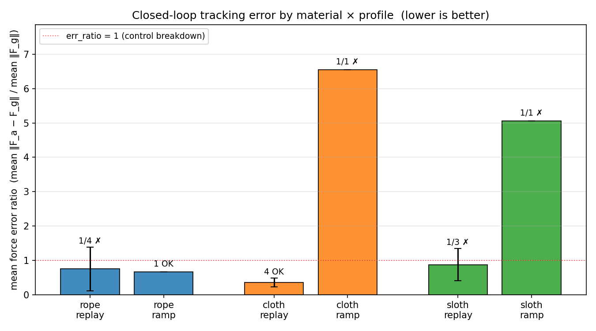
RL mainly improves ramp tests, where BC fails to retract.
Replacing the material one-hot with
[log(spring_stiffness), log(mean_force)] gives the policy useful scale
information. Replay improves most on rope and sloth, where force magnitudes differ strongly
from cloth.
2D descriptor on rope replay: 0.46 versus 0.75 without it.
2D descriptor on rope ramp: retraction remains difficult.
Experiment 4: Transformer with Scheduled Sampling
cloth replay 0.305 · rope replay 0.391
A transformer adds memory by attending to recent frames and a short goal preview. This helps
replay, but imitation alone worsens ramps because the stronger model compounds its own
errors. Scheduled sampling fixes this by injecting action noise during training, teaching the
model to recover from small rollout mistakes.
Transformer policy with past-frame tokens, goal-preview tokens, material conditioning, and
training-time noise injection.
The noise-injected transformer gives the best replay tracking on rope and cloth.
Experiment 5: FiLM Physics Conditioning
sloth ramp 1.38, project best | improves ramp tracking on rope and sloth
FiLM uses the physics descriptor to modulate each network layer instead of simply appending
it to the input. With an enriched descriptor, this improves rope and sloth ramp tracking and
reaches the project's best sloth ramp result. A per-case embedding was harmful because it
encouraged memorization rather than transfer.
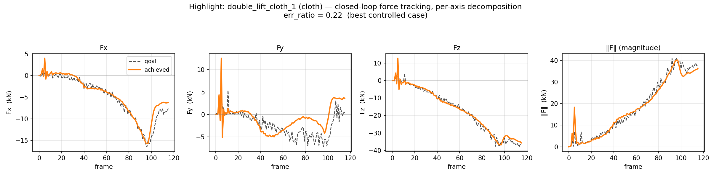
Cloth results across policy variants. FiLM with the enriched descriptor improves ramp performance without degrading replay.
FiLM 11D on double_stretch_sloth ramp, err_ratio 1.38, the project's best sloth ramp result. The policy tracks the ascending ramp and releases on the descent, unlike BC.
RL on sloth replay (err_ratio 0.66) for comparison. RL remains stronger on replay; FiLM is stronger on this ramp.
Experiment 6: Removing Privileged Force-Scale Information
rope replay degrades 0.46 → 0.84 without force scale
The descriptor's force-scale term is computed from the recorded episode, so on replay it
reveals the target trajectory magnitude in advance. Removing it degrades rope replay from 0.46 to
0.84; re-adding it restores performance, confirming the information advantage.
Interpretation: part of the descriptor's benefit came from giving the
policy the goal magnitude in advance. Stiffness is a real but weaker material signal.
Experiment 7: PPO Fine-Tuning the Transformer
no improvement over the warm start
PPO fine-tuning did not improve the noise-injected transformer. This suggests scheduled
sampling had already provided the rollout robustness that RL gave earlier, leaving little for
PPO to correct.
Experiment 8: Goal-Aware Policy Ensemble
14-case mean 0.66 · best single 0.71 · oracle 0.63
The final system routes each rollout to the best specialist: transformer for replay-shaped
goals, FiLM for most ramps, and RL for cloth ramps. The route is chosen from the commanded
goal alone, with no oracle labels or extra training. The ensemble beats every single policy
on mean err_ratio and comes within 0.03 of the hindsight oracle.
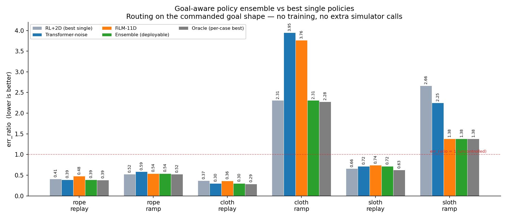
The deployable ensemble tracks the oracle closely across groups.
Group
Best single policy
Ensemble
Oracle
rope replay
0.391
0.391
0.385
rope ramp
0.524
0.544
0.524
cloth replay
0.305
0.305
0.289
cloth ramp
2.281
2.310
2.281
sloth replay
0.660
0.719
0.626
sloth ramp
1.382
1.382
1.382
14-case mean
0.713
0.655
0.626
The ensemble works because no single policy is best everywhere.
Summary: err_ratio across policy variants
Lower is better. The best value per column is bold.
Policy
rope replay
rope ramp
cloth replay
cloth ramp
sloth replay
sloth ramp
BC base
0.75
0.66
0.36
6.55
0.87
5.06
BC + 2D descriptor
0.46
0.62
0.37
2.28
0.68
1.73
RL + 2D descriptor
0.41
0.52
0.37
2.31
0.66
2.66
Transformer + scheduled sampling
0.39
0.59
0.31
3.95
0.72
2.25
FiLM 11D physics
0.48
0.54
0.36
3.76
0.74
1.38
Goal-aware ensemble
0.39
0.54
0.31
2.31
0.72
1.38
The transformer leads on replay, FiLM on most ramps, and RL on cloth ramp. The ensemble uses
this complementarity.
Failure cases. Cloth ramp remains the hardest: the policy reduces force on the descending ramp but consistently overshoots it.
Analysis: Error Structure & Generalization
After improving the controller, we ask two questions: where does error remain, and can the
policy transfer to a material it never saw during training?
Experiment 9: What Error Remains?
Fy is hardest for every material · cloth ramp remains unsolved
Across the project, each improvement solved a different failure: material conditioning
reduced ramp failures, scheduled sampling improved replay, and FiLM helped rope and sloth
ramps. The ensemble combines these strengths, but cloth ramp remains the hardest group,
plateauing near err_ratio 2.3.
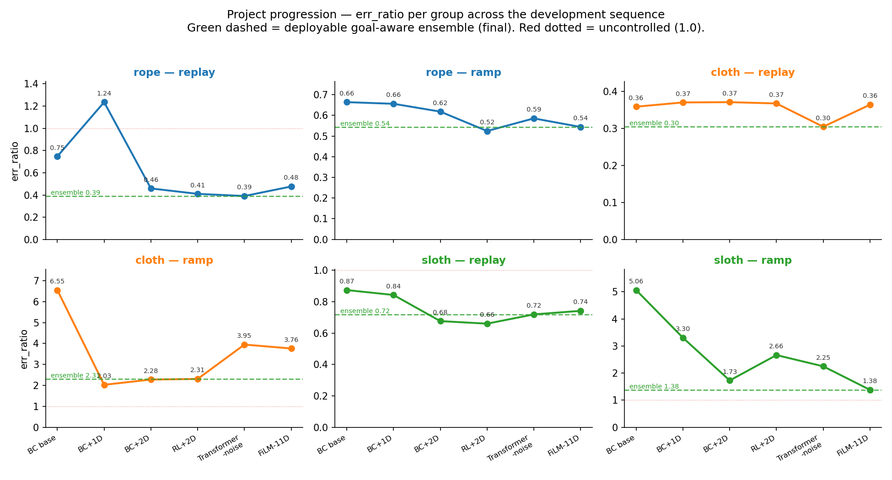
err_ratio across the development sequence. The green dashed line is the deployable
ensemble; the red dotted line marks err_ratio 1.0.
Per-axis error shows a consistent pattern: Fy, the vertical lift axis, dominates the
error budget. This makes physical sense because lifting works against gravity and
drives the largest deformation and release dynamics.
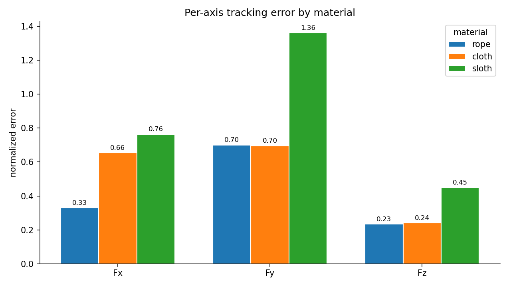
Per-axis tracking error on ensemble rollouts. Fy is consistently hardest; Fz is easiest.
Experiment 10: Held-Out Material Transfer
single_lift_sloth transfers well at 0.47 · aggressive stretches degrade 2–4×
The strongest generalization test holds out the plush sloth entirely during training. The
policy trains only on rope and cloth, then uses the material descriptor to control sloth at
test time. Transfer is partial: gentle lifting remains controlled, while aggressive stretching
breaks down.
Sloth case
Trained with sloth
Sloth held out
single_lift_sloth replay
0.242
0.468
double_lift_sloth replay
1.152
1.461
double_stretch_sloth replay
0.831
3.049
double_stretch_sloth ramp
1.382
3.566
mean
0.902
2.136
Holding out sloth preserves control on the gentle lift but fails on aggressive stretches.
Held-out success: single_lift_sloth replay, err_ratio 0.47. The policy has never seen a sloth, yet tracks the lift using the stiffness descriptor.
Held-out failure mode: double_stretch_sloth ramp, err_ratio 3.57. On the most aggressive maneuver, extrapolation from rope and cloth breaks down.
Takeaway: the material descriptor carries real physical information, but it
cannot replace training data. It supports interpolation on gentle goals and fails on the most
aggressive extrapolation.
Limitations & Future Work
Limitations
Simulation only. Forces come from PhysTwin spring forces, so results depend
on calibration quality. The kN-scale values are simulator units, not real hand forces.
Cloth ramp remains unsolved. Every policy, including the oracle, plateaus
near err_ratio 2.3.
Small case count. With ~17 cases, richer conditioning can memorize case
identity instead of learning material physics.
Held-out transfer is partial. A new material works on gentle goals but
degrades sharply on aggressive ones.
Demonstration noise limits precision. Human gripper motion is not perfectly
rigid, which caps imitation-based control accuracy.
Future work
MPC upper bound. Use model-predictive control with full simulator access to
test whether cloth ramp is limited by the policy or by the physics itself.
Target the Fy axis. Since vertical lift dominates the error budget, add an
axis-weighted loss, reward, or gravity-compensation term.
Scale the dataset. Add more real cases and synthetic motion families to
improve ramp coverage and held-out-material transfer.
Context adapter. Condition the policy on task descriptions such as
"lift gently" using a compact external summary vector, rather than attention tokens that may
encourage memorization.